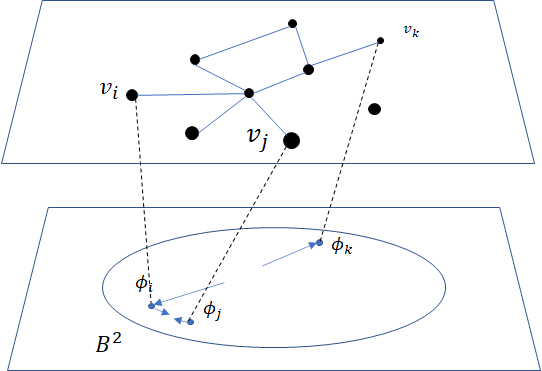
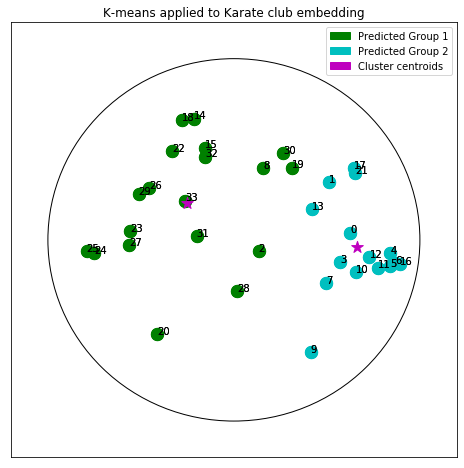

import os
import sys
import warnings
sys.path.append(os.path.dirname(os.getcwd()))
warnings.filterwarnings('ignore')Tutorial: Hyperbolic Embedding of Graphs and Clustering
Introduction
From social networks to parse trees, knowledge graphs to protein interaction networks, Graph-Structured Data is endemic to a wide variety of natural and engineered systems. Often, understanding the structure and/or dynamics of these graphs yields insight into the systems under investigation. Take, for example, the problems of finding key influencers or distinct communities within social networks.
The goal of graph embedding is to find a way of representing the graph in a space which more readily lends itself to analysis/investigation. One approach is to identify points in a vector space with nodes of the graph in such a way that important relations between nodes are preserved via relations between their corresponding points.
There are a wide variety of methods which approach this problem in different ways and for different aims, say for clustering or for link prediction. Recently, the embedding of Graph Structured Data (GSD) on manifolds has received considerable attention. In particular, much work has shown that hyperbolic spaces are beneficial for a wide variety of tasks with GSD [ND2017]. This tutorial shows how to learn such embeddings using the Poincaré Ball manifold and the well-known ‘Karate Club’ social network dataset with geomstats. This data and several others can be found in the datasets.data module of the project’s github repository.
 Learning a Poincaré disk embedding of the Karate club graph dataset
Learning a Poincaré disk embedding of the Karate club graph dataset
Setup
We start by importing standard tools for logging and visualization, allowing us to draw the embedding of the GSD on the manifold. Next, we import the manifold of interest, visualization tools, and other methods from geomstats.
import logging
import matplotlib.pyplot as plt
import geomstats.backend as gs
import geomstats.visualization as visualization
from geomstats.datasets.utils import load_karate_graph
from geomstats.geometry.poincare_ball import PoincareBallINFO: Using numpy backendParameters and Initialization
We define the following parameters needed for embedding:
| Parameter | Description |
|---|---|
| random.seed | An initial manually set number for generating pseudorandom numbers |
| dim | Dimensions of the manifold used for embedding |
| max_epochs | Number of iterations for learning the embedding |
| lr | Learning rate |
| n_negative | Number of negative samples |
| context_size | Size of the considered context for each node of the graph |
Let us discuss a few things about the parameters of the above table. The number of dimensions should be high (i.e., 10+) for large datasets (i.e., where the number of nodes/edges is significantly large). In this tutorial we consider a dataset that is quite small with only 34 nodes. The Poincaré disk of only two dimensions is therefore sufficient to capture the complexity of the graph and provide a faithful representation. Some parameters are hard to know in advance, such as max_epochs and lr. These should be tuned specifically for each dataset. Visualization can help with tuning the parameters. Also, one can perform a grid search to find values of these parameters which maximize some performance function. In learning embeddings, one can consider performance metrics such as a measure for cluster seperability or normalized mutual information (NMI) or others. Similarly, the number of negative samples and context size can also be thought of as hyperparameters and will be further discussed in the sequel. An instance of the Graph class is created and set to the Karate club dataset.
gs.random.seed(1234)
dim = 2
max_epochs = 100
lr = .05
n_negative = 2
context_size = 1
karate_graph = load_karate_graph()The Zachary karate club network was collected from the members of a university karate club by Wayne Zachary in 1977. Each node represents a member of the club, and each edge represents an undirected relation between two members. An often discussed problem using this dataset is to find the two groups of people into which the karate club split after an argument between two teachers.  Some information about the dataset is displayed to provide insight into its complexity.
Some information about the dataset is displayed to provide insight into its complexity.
nb_vertices_by_edges =\
[len(e_2) for _, e_2 in karate_graph.edges.items()]
logging.info('Number of vertices: %s', len(karate_graph.edges))
logging.info(
'Mean edge-vertex ratio: %s',
(sum(nb_vertices_by_edges, 0) / len(karate_graph.edges)))INFO: Number of vertices: 34
INFO: Mean edge-vertex ratio: 4.588235294117647Denote \(V\) as the set of nodes and \(E \subset V\times V\) the set of edges. The goal of embedding GSD is to provide a faithful and exploitable representation of the graph structure. It is mainly achieved by preserving first-order proximity that enforces nodes sharing edges to be close to each other. It can additionally preserve second-order proximity that enforces two nodes sharing the same context (i.e., nodes that share neighbors but are not necessarily directly connected) to be close. Let \(\mathbb{B}^m\) be the Poincaré Ball of dimension \(m\) equipped with the distance function \(d\). The below figure shows geodesics between pairs of points on \(\mathbb{B}^2\). Geodesics are the shortest path between two points. The distance function \(d\) of two points is the length of the geodesic that links them.

Declaring an instance of the PoincareBall manifold of two dimensions in geomstats is straightforward:
hyperbolic_manifold = PoincareBall(2)first and second-order proximities can be achieved by optimising the following loss functions:
Loss function.
To preserve first and second-order proximities we adopt a loss function similar to (Nickel, 2017) and consider the negative sampling approach as in (Mikolov, 2013) :
\[ \mathcal{L} = - \sum_{v_i\in V} \sum_{v_j \in C_i} \bigg[ log(\sigma(-d^2(\phi_i, \phi_j'))) + \sum_{v_k\sim \mathcal{P}_n} log(\sigma(d^2(\phi_i, \phi_k'))) \bigg]\]
where \(\sigma(x)=\frac{1}{1+e^{-x}}\) is the sigmoid function and \(\phi_i \in \mathbb{B}^m\) is the embedding of the \(i\)-th node of \(V\), \(C_i\) the nodes in the context of the \(i\)-th node, \(\phi_j'\in \mathbb{B}^m\) the embedding of \(v_j\in C_i\) and \(\mathcal{P}_n\) the negative sampling distribution over \(V\): \(\mathcal{P}_n(v)=\frac{deg(v)^{3/4}}{\sum_{v_i\in V}deg(v_i)^{3/4}}\). Intuitively one can see that to minimizing \(L\), the distance between \(v_i\) and \(v_j\) should get smaller, while the one between \(v_i\) and \(v_k\) would get larger. 
Riemannian optimization.
Following the idea of (Ganea, 2018) we use the following formula to optimize \(L\):
\[ \phi^{t+1} = \text{Exp}_{\phi^t} \left( -lr \frac{\partial L}{\partial \phi} \right) \]
where \(\phi\) is a parameter of \(L\), \(t\in\{1,2,\cdots\}\) is the epoch iteration number and \(lr\) is the learning rate. The formula consists of first computing the usual gradient of the loss function giving the direction in which the parameter should move. The Riemannian exponential map \(\text{Exp}\) is a function that takes a base point \(\phi^t\) and some direction vector \(T\) and returns the point \(\phi^{t+1}\) such that \(\phi^{t+1}\) belongs to the geodesic initiated from \(\phi{t}\) in the direction of \(T\) and the length of the geoedesic curve between \(\phi^t\) and \(\phi^{t+1}\) is of 1 unit. The Riemannian exponential map is implemented as a method of the PoincareBallMetric class in the geometry module of geomstats.
Therefore to minimize \(L\) we will need to compute its gradient. Several steps are required to do so, 1. Compute the gradient of the squared distance 2. Compute the gradient of the log sigmoid 3. Compute the gradient of the composision of 1. and 2.
For 1., we use the formula proposed by (Arnaudon, 2013) which uses the Riemannian logarithmic map to compute the gradient of the distance. This is implemented as
def grad_squared_distance(point_a, point_b):
"""Gradient of squared hyperbolic distance.
Gradient of the squared distance based on the
Ball representation according to point_a
Parameters
----------
point_a : array-like, shape=[n_samples, dim]
First point in hyperbolic space.
point_b : array-like, shape=[n_samples, dim]
Second point in hyperbolic space.
Returns
-------
dist : array-like, shape=[n_samples, 1]
Geodesic squared distance between the two points.
"""
hyperbolic_metric = PoincareBall(2).metric
log_map = hyperbolic_metric.log(point_b, point_a)
return -2 * log_mapFor 2. define the log_sigmoid corresponding as follows:
def log_sigmoid(vector):
"""Logsigmoid function.
Apply log sigmoid function
Parameters
----------
vector : array-like, shape=[n_samples, dim]
Returns
-------
result : array-like, shape=[n_samples, dim]
"""
return gs.log((1 / (1 + gs.exp(-vector))))The gradient of the logarithm of sigmoid function is implemented as:
def grad_log_sigmoid(vector):
"""Gradient of log sigmoid function.
Parameters
----------
vector : array-like, shape=[n_samples, dim]
Returns
-------
gradient : array-like, shape=[n_samples, dim]
"""
return 1 / (1 + gs.exp(vector))For 3., apply the composition rule to obtain the gradient of \(L\). The following function given \(\phi_i\), \(\phi'_j\) and \(\phi'_k\) returns the total value of \(L\) and its gradient vector at \(\phi_i\). For the value of \(L\) the loss function formula is simply applied. For the gradient, we apply the composition of grad_log_sigmoid with grad_squared_distance while paying attention to the signs.
def loss(example_embedding, context_embedding, negative_embedding,
manifold):
"""Compute loss and grad.
Compute loss and grad given embedding of the current example,
embedding of the context and negative sampling embedding.
"""
n_edges, dim =\
negative_embedding.shape[0], example_embedding.shape[-1]
example_embedding = gs.expand_dims(example_embedding, 0)
context_embedding = gs.expand_dims(context_embedding, 0)
positive_distance =\
manifold.metric.squared_dist(
example_embedding, context_embedding)
positive_loss =\
log_sigmoid(-positive_distance)
reshaped_example_embedding =\
gs.repeat(example_embedding, n_edges, axis=0)
negative_distance =\
manifold.metric.squared_dist(
reshaped_example_embedding, negative_embedding)
negative_loss = log_sigmoid(negative_distance)
total_loss = -(positive_loss + negative_loss.sum())
positive_log_sigmoid_grad =\
-grad_log_sigmoid(-positive_distance)
positive_distance_grad =\
grad_squared_distance(example_embedding, context_embedding)
positive_grad =\
gs.repeat(positive_log_sigmoid_grad, dim, axis=-1)\
* positive_distance_grad
negative_distance_grad =\
grad_squared_distance(reshaped_example_embedding, negative_embedding)
negative_distance = gs.to_ndarray(negative_distance,
to_ndim=2, axis=-1)
negative_log_sigmoid_grad =\
grad_log_sigmoid(negative_distance)
negative_grad = negative_log_sigmoid_grad\
* negative_distance_grad
example_grad = -(positive_grad + negative_grad.sum(axis=0))
return total_loss, example_gradCapturing the graph structure
At this point we have the necessary bricks to compute the resulting gradient of \(L\). We are ready to prepare the nodes \(v_i\), \(v_j\) and \(v_k\) and initialise their embeddings \(\phi_i\), \(\phi^{'}_j\) and \(\phi^{'}_k\). First, initialize an array that will hold embeddings \(\phi_i\) of each node \(v_i\in V\) with random points belonging to the Poincaré disk.
embeddings = gs.random.normal(size=(karate_graph.n_nodes, dim))
embeddings = embeddings * 0.2Next, to prepare the context nodes \(v_j\) for each node \(v_i\), we compute random walks initialised from each \(v_i\) up to some length (5 by default). The latter is done via a special function within the Graph class. The nodes \(v_j\) will be later picked from the random walk of \(v_i\).
random_walks = karate_graph.random_walk()Negatively sampled nodes \(v_k\) are chosen according to the previously defined probability distribution function \(\mathcal{P}_n(v_k)\) implemented as
negative_table_parameter = 5
negative_sampling_table = []
for i, nb_v in enumerate(nb_vertices_by_edges):
negative_sampling_table +=\
([i] * int((nb_v**(3. / 4.))) * negative_table_parameter)
negative_sampling_table = gs.array(negative_sampling_table)Numerically optimizing the loss function
Optimising the loss function is performed numerically over the number of epochs. At each iteration, we will compute the gradient of \(L\). Then the graph nodes are moved in the direction pointed by the gradient. The movement of the nodes is performed by following geodesics in the gradient direction. The key to obtain an embedding representing accurately the dataset, is to move the nodes smoothly rather than brutal movements. This is done by tuning the learning rate, such as at each epoch all the nodes made small movements.
A first level loop iterates over the epochs, the table total_loss will record the value of \(L\) at each iteration and help us track the minimization of \(L\).
A second level nested loop iterates over each path in the previously computed random walks. Observing these walks, notice that nodes having many edges appear more often. Such nodes can be considered as important crossroads and will therefore be subject to a greater number of embedding updates. This is one of the main reasons why random walks have proven to be effective in capturing the structure of graphs. The context of each \(v_i\) will be the set of nodes \(v_j\) belonging to the random walk from \(v_i\). The context_size specified earlier will limit the length of the walk to be considered. Similarly, we use the same context_size to limit the number of negative samples. We find \(\phi_i\) from the embeddings array.
A third level nested loop will iterate on each \(v_j\) and \(v_k\). From within, we find \(\phi'_j\) and \(\phi'_k\) then call the loss function to compute the gradient. Then the Riemannian exponential map is applied to find the new value of \(\phi_i\) as we mentioned before.
for epoch in range(max_epochs):
total_loss = []
for path in random_walks:
for example_index, one_path in enumerate(path):
context_index = path[max(0, example_index - context_size):
min(example_index + context_size,
len(path))]
negative_index =\
gs.random.randint(negative_sampling_table.shape[0],
size=(len(context_index),
n_negative))
negative_index = negative_sampling_table[negative_index]
example_embedding = embeddings[one_path]
for one_context_i, one_negative_i in zip(context_index,
negative_index):
context_embedding = embeddings[one_context_i]
negative_embedding = embeddings[one_negative_i]
l, g_ex = loss(
example_embedding,
context_embedding,
negative_embedding,
hyperbolic_manifold)
total_loss.append(l)
example_to_update = embeddings[one_path]
embeddings[one_path] = hyperbolic_manifold.metric.exp(
-lr * g_ex, example_to_update)
logging.info(
'iteration %d loss_value %f',
epoch, sum(total_loss, 0) / len(total_loss))INFO: iteration 0 loss_value 1.826876
INFO: iteration 1 loss_value 1.774560
INFO: iteration 2 loss_value 1.725700
INFO: iteration 3 loss_value 1.663358
INFO: iteration 4 loss_value 1.655706
INFO: iteration 5 loss_value 1.615405
INFO: iteration 6 loss_value 1.581097
INFO: iteration 7 loss_value 1.526418
INFO: iteration 8 loss_value 1.507913
INFO: iteration 9 loss_value 1.505934
INFO: iteration 10 loss_value 1.466526
INFO: iteration 11 loss_value 1.453769
INFO: iteration 12 loss_value 1.443878
INFO: iteration 13 loss_value 1.451272
INFO: iteration 14 loss_value 1.397864
INFO: iteration 15 loss_value 1.396170
INFO: iteration 16 loss_value 1.373677
INFO: iteration 17 loss_value 1.390120
INFO: iteration 18 loss_value 1.382397
INFO: iteration 19 loss_value 1.404103
INFO: iteration 20 loss_value 1.395782
INFO: iteration 21 loss_value 1.389617
INFO: iteration 22 loss_value 1.410152
INFO: iteration 23 loss_value 1.390600
INFO: iteration 24 loss_value 1.374832
INFO: iteration 25 loss_value 1.367194
INFO: iteration 26 loss_value 1.323190
INFO: iteration 27 loss_value 1.389616
INFO: iteration 28 loss_value 1.361034
INFO: iteration 29 loss_value 1.384930
INFO: iteration 30 loss_value 1.340814
INFO: iteration 31 loss_value 1.349682
INFO: iteration 32 loss_value 1.317423
INFO: iteration 33 loss_value 1.346869
INFO: iteration 34 loss_value 1.327198
INFO: iteration 35 loss_value 1.363809
INFO: iteration 36 loss_value 1.352347
INFO: iteration 37 loss_value 1.317670
INFO: iteration 38 loss_value 1.320039
INFO: iteration 39 loss_value 1.323888
INFO: iteration 40 loss_value 1.341444
INFO: iteration 41 loss_value 1.312259
INFO: iteration 42 loss_value 1.315983
INFO: iteration 43 loss_value 1.305483
INFO: iteration 44 loss_value 1.325384
INFO: iteration 45 loss_value 1.328024
INFO: iteration 46 loss_value 1.306958
INFO: iteration 47 loss_value 1.303357
INFO: iteration 48 loss_value 1.303790
INFO: iteration 49 loss_value 1.324749
INFO: iteration 50 loss_value 1.328376
INFO: iteration 51 loss_value 1.313816
INFO: iteration 52 loss_value 1.325978
INFO: iteration 53 loss_value 1.317516
INFO: iteration 54 loss_value 1.353495
INFO: iteration 55 loss_value 1.331988
INFO: iteration 56 loss_value 1.346874
INFO: iteration 57 loss_value 1.348946
INFO: iteration 58 loss_value 1.324719
INFO: iteration 59 loss_value 1.330355
INFO: iteration 60 loss_value 1.331077
INFO: iteration 61 loss_value 1.305729
INFO: iteration 62 loss_value 1.311746
INFO: iteration 63 loss_value 1.347637
INFO: iteration 64 loss_value 1.326300
INFO: iteration 65 loss_value 1.309570
INFO: iteration 66 loss_value 1.313999
INFO: iteration 67 loss_value 1.346287
INFO: iteration 68 loss_value 1.300901
INFO: iteration 69 loss_value 1.323723
INFO: iteration 70 loss_value 1.320784
INFO: iteration 71 loss_value 1.313709
INFO: iteration 72 loss_value 1.312143
INFO: iteration 73 loss_value 1.309172
INFO: iteration 74 loss_value 1.320642
INFO: iteration 75 loss_value 1.308333
INFO: iteration 76 loss_value 1.325884
INFO: iteration 77 loss_value 1.316740
INFO: iteration 78 loss_value 1.325933
INFO: iteration 79 loss_value 1.316672
INFO: iteration 80 loss_value 1.312291
INFO: iteration 81 loss_value 1.332372
INFO: iteration 82 loss_value 1.317499
INFO: iteration 83 loss_value 1.329194
INFO: iteration 84 loss_value 1.305926
INFO: iteration 85 loss_value 1.304747
INFO: iteration 86 loss_value 1.342343
INFO: iteration 87 loss_value 1.331992
INFO: iteration 88 loss_value 1.295439
INFO: iteration 89 loss_value 1.332853
INFO: iteration 90 loss_value 1.332004
INFO: iteration 91 loss_value 1.357248
INFO: iteration 92 loss_value 1.342234
INFO: iteration 93 loss_value 1.329379
INFO: iteration 94 loss_value 1.313617
INFO: iteration 95 loss_value 1.310320
INFO: iteration 96 loss_value 1.320590
INFO: iteration 97 loss_value 1.315822
INFO: iteration 98 loss_value 1.328819
INFO: iteration 99 loss_value 1.339718Plotting results
Once the max_epochs iterations of epochs is achieved, we can plot the resulting embeddings array and the true labels shown as two colors. At 100 epochs we can see that the two group of nodes with different labels are moving away from each other on the manifold. If one increases the max_epochs, then further separability is achieved.
import matplotlib.patches as mpatches
colors = {1: 'b', 2: 'r'}
group_1 = mpatches.Patch(color=colors[1], label='Group 1')
group_2 = mpatches.Patch(color=colors[2], label='Group 2')
circle = visualization.PoincareDisk(point_type='ball')
fig, ax = plt.subplots(figsize=(8, 8))
ax.axes.xaxis.set_visible(False)
ax.axes.yaxis.set_visible(False)
circle.set_ax(ax)
circle.draw(ax=ax)
for i_embedding, embedding in enumerate(embeddings):
x = embedding[0]
y = embedding[1]
pt_id = i_embedding
plt.scatter(
x, y,
c=colors[karate_graph.labels[pt_id][0]],
s = 150
)
ax.annotate(pt_id, (x,y))
plt.tick_params(
which='both')
plt.title('Poincare Ball Embedding of the Karate Club Network')
plt.legend(handles=[group_1, group_2])
plt.show()
In geomstats, several unsupervized clustering algorithms on manifolds are implemented such as \(K\)-means and Expectation-Maximization.
Let us apply \(K\)-means to learn the node belonging of the two groups and see how well we predicted the true labels. Lets first import \(K\)-means
from geomstats.learning.kmeans import RiemannianKMeansSet the number of groups to 2.
n_clusters = 2Initialize an instance of \(K\)-means.
kmeans = RiemannianKMeans(metric= hyperbolic_manifold.metric,
n_clusters=n_clusters,
init='random',
mean_method='batch'
)Fit the embedded nodes
centroids = kmeans.fit(X=embeddings)
labels = kmeans.predict(X=embeddings)And plot the resulting labels provided by \(K\)-means
colors = ['g', 'c', 'm']
circle = visualization.PoincareDisk(point_type='ball')
fig2, ax2 = plt.subplots(figsize=(8, 8))
circle.set_ax(ax2)
circle.draw(ax=ax2)
ax2.axes.xaxis.set_visible(False)
ax2.axes.yaxis.set_visible(False)
group_1_predicted = mpatches.Patch(color=colors[0], label='Predicted Group 1')
group_2_predicted = mpatches.Patch(color=colors[1], label='Predicted Group 2')
group_centroids = mpatches.Patch(color=colors[2], label='Cluster centroids')
for i in range(n_clusters):
for i_embedding, embedding in enumerate(embeddings):
x = embedding[0]
y = embedding[1]
pt_id = i_embedding
if labels[i_embedding] == 0:
color = colors[0]
else:
color = colors[1]
plt.scatter(
x, y,
c=color,
s = 150
)
ax2.annotate(pt_id, (x,y))
for i_centroid, centroid in enumerate(centroids):
x = centroid[0]
y = centroid[1]
plt.scatter(
x, y,
c=colors[2],
marker='*',
s = 150,
)
plt.title('K-means applied to Karate club embedding')
plt.legend(handles = [group_1_predicted, group_2_predicted, group_centroids])
plt.show()
By comparing the \(K\)-means labels and the true labels, notice how \(K\)-means accurately finds the two groups of nodes (not perfectly, e.g., nodes 2 and 8). We therefore achieved good performances in predicting the belonging of each member of the Karate club to one of the two groups.
References
.. [ABY2013] Arnaudon, Marc, Frédéric Barbaresco, and Le Yang. “Riemannian medians and means with applications to radar signal processing.” IEEE Journal of Selected Topics in Signal Processing 7.4 (2013): 595-604.
.. [GBH2018] Ganea, Octavian, Gary Bécigneul, and Thomas Hofmann. “Hyperbolic neural networks.” Advances in neural information processing systems. 2018.
.. [M2013] Mikolov, Tomas, et al. “Distributed representations of words and phrases and their compositionality.” Advances in neural information processing systems. 2013.
.. [ND2017] Nickel, Maximillian, and Douwe Kiela. “Poincaré embeddings for learning hierarchical representations.” Advances in neural information processing systems. 2017.